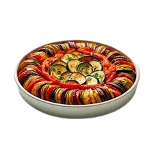
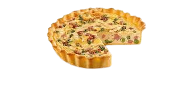
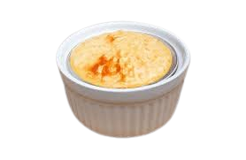

Receitas de Auguste Gusteau

Ratatouille
- 2 abobrinhas
- 1 berinjela
- 2 tomates
- 1 pimentão vermelho
- 2 dentes de alho
Corte os vegetais em rodelas finas, monte em camadas e asse com molho de tomate por 45 minutos.

Quiche Lorraine
- 200g de bacon
- 3 ovos
- 200ml de creme de leite
- 1 massa brisée (massa podre)
- 100g de queijo Gruyère
Asse a massa brisée, adicione o recheio de ovos, creme de leite, bacon e queijo. Asse por 30 minutos.

Soufflé de Queijo
- 50g de manteiga
- 50g de farinha de trigo
- 250ml de leite
- 100g de queijo Gruyère ralado
- 4 ovos
Prepare o roux com manteiga e farinha, adicione leite e queijo. Incorpore as gemas e claras batidas, e leve ao forno.